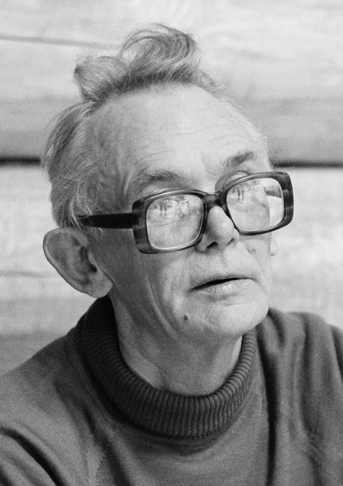
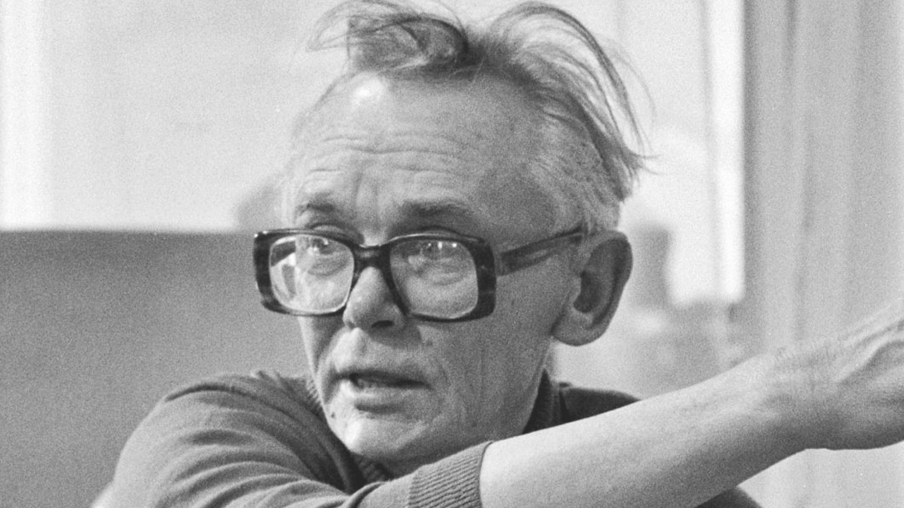
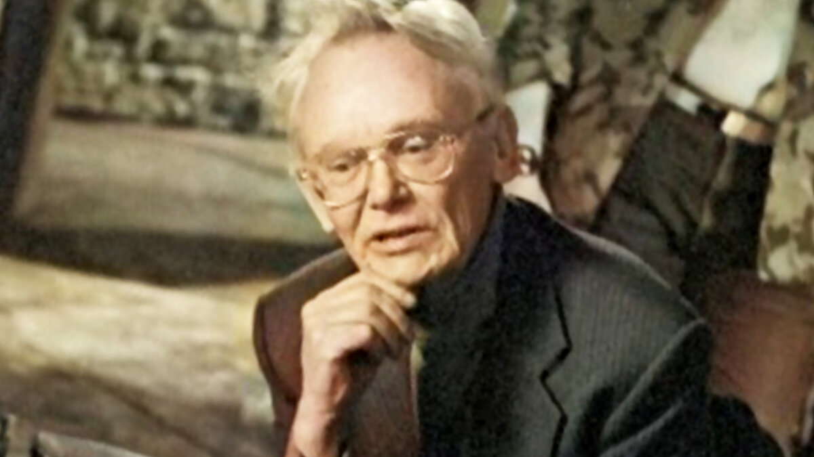

Леонид Иович Гайдай - выдающийся советский кинорежиссёр, сценарист и мастер комедийного жанра. Его фильмы стали классикой отечественного кинематографа и до сих пор остаются любимыми для миллионов зрителей.
Леонид Гайдай родился 30 января 1923 года в городе Свободный Амурской области. После школы он участвовал в Великой Отечественной войне, а позже поступил во ВГИК, где начал путь режиссёра.
Настоящая популярность пришла к нему после создания культовых советских комедий: «Операция „Ы“», «Кавказская пленница», «Бриллиантовая рука» и других.
Его фильмы отличались ярким юмором, харизматичными персонажами и необычной подачей. Многие фразы из фильмов Гайдая стали крылатыми.


